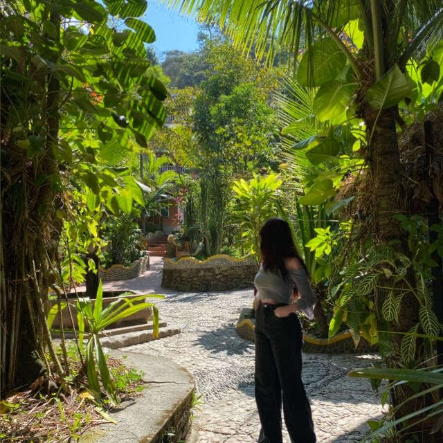

Estudiante de Administración de Negocios en la Universidad Católica San Pablo, Arequipa - Perú.
Nombres: Ariadna Paredes
Edad: 17 años Cumpleaños: 14 de junio Vivo en:¡Hola! Soy una joven apasionada por la vida, el aprendizaje y los nuevos desafíos. , Me considero una persona activa, perseverante y curiosa. Me motivan los retos y disfruto aprender cosas nuevas constantemente, explorar distintas formas de ver el mundo. Creo en los negocios con propósito, en la innovación con impacto y en el poder de unir valores humanos con emprendimiento. Estoy convencida de que, con esfuerzo, constancia y buena actitud, los sueños pueden convertirse en realidad.
• Amor por los animales: Me encantan los animales, en especial los monitos. 🐵 • Aventura: Disfruto mucho manejar cuatrimotos, buggies y todo lo que tenga que ver con la aventura. 🚜 • Danza: Bailo desde que era pequeña y es algo que realmente disfruto. 💃 • Viajar: Me encanta explorar nuevos lugares y sumergirme en distintas culturas, viajar es una de mis actividades favoritas. 🌍 • Repostería: Amo preparar postres y dulces; es una forma de expresar mi creatividad en la cocina. 🍰 • Música y arte: En mis tiempos libres me gusta dibujar y tocar el piano. Además, estoy aprendiendo a tocar la guitarra. 🎨🎹🎸
• Los negocios con propósito:Me apasiona el emprendimiento que genera valor real, con enfoque humano y sostenible.📈
Actualmente estudio en:
Docente:
Docente:
Docente:
Docente:
Docente:
Docente: